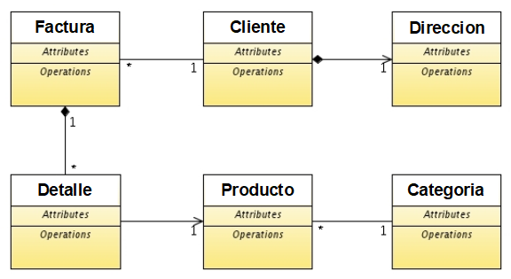
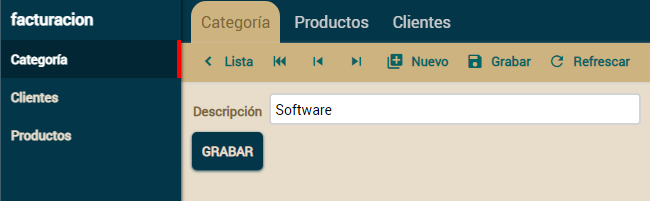
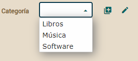
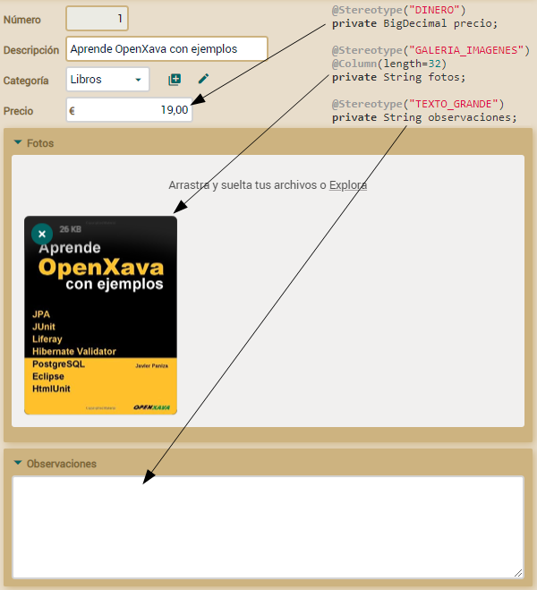
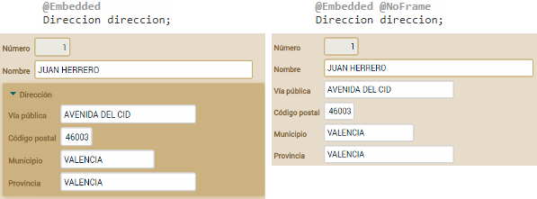

Si no te gustan los videos sigue
las instrucciones a continuación.
Modelo del dominio
Primero crearemos las entidades para tu aplicación
Facturacion.
El modelo del dominio es más bien básico, pero suficiente para aprender
bastantes cosas interesantes:

Empezaremos con seis clases, y más adelante añadiremos algunas más.
Recuerda que ya tienes una versión inicial de
Cliente y
Producto.
Referencia
(ManyToOne) como lista de descripciones (combo)
Empecemos con el caso más simple. Vamos a crear una entidad
Categoria
y asociarla a
Producto, visualizándola con un combo.
El código para la entidad
Categoria es:
package com.tuempresa.facturacion.modelo;
import javax.persistence.*;
import org.hibernate.annotations.GenericGenerator;
import org.openxava.annotations.*;
import lombok.*;
@Entity @Getter @Setter
public class Categoria {
@Id
@Hidden // La propiedad no se muestra al usuario. Es un identificador interno
@GeneratedValue(generator="system-uuid") // Identificador Universal Único (1)
@GenericGenerator(name="system-uuid", strategy = "uuid")
@Column(length=32)
String oid;
@Column(length=50)
String descripcion;
}
Sin duda, la entidad más simple
posible. Solo tiene un identificador y una propiedad descripcion.
En este caso usamos el algoritmo Identificador Universal Único (1) para
generar el identificador. La ventaja de este generador de identificadores
es que puedes migrar tu aplicación a otras bases de datos (DB2, MySQL,
Oracle, Informix, etc) sin tocar tu código. Los otros generadores de
identificadores de JPA usan la base de datos para generar el
identificador, por lo que no son tan portables como UUID.
Ahora puedes ejecutar el módulo Categoria y añadir algunas
categorías:

Lo siguiente sería asociar Producto con Categoria:
Añade la siguiente declaración para la referencia categoria en
tu entidad Producto:
public class Producto {
...
@ManyToOne( // La referencia se almacena como una relación en la base de datos
fetch=FetchType.LAZY, // La referencia se carga bajo demanda
optional=true) // La referencia puede estar sin valor
@DescriptionsList // Así la referencia se visualiza usando un combo
Categoria categoria; // Una referencia Java convencional
}
Es una simple relación
muchos-a-uno de JPA, como se puede ver en el
apéndice
B. En este caso, gracias a la anotación
@DescriptionsList
se visualiza usando un combo:

Ahora es el momento de completar la entidad
Producto.
Estereotipos
La entidad
Producto necesita tener al menos precio, además
estaría bien que tuviese fotos y un campo para observaciones. Vamos a usar
estereotipos para conseguirlo. Un estereotipo especifica un uso específico
de un tipo. Por ejemplo, puedes usar
String para almacenar
nombres, comentarios o identificadores, y puedes usar
BigDecimal
para almacenar porcentajes, dinero o cantidades. Es decir, hacemos
diferentes usos del mismo tipo. Los estereotipo son justo para marcar este
uso específico.
La mejor forma de entender que es un estereotipo es verlo en acción.
Añadamos las propiedades
precio,
fotos y
observaciones
a tu entidad
Producto:
@Stereotype("DINERO") // La propiedad precio se usa para almacenar dinero
BigDecimal precio; // BigDecimal se suele usar para dinero
@Stereotype("GALERIA_IMAGENES") // Una galería de fotos completa está disponible
@Column(length=32) // La cadena de 32 de longitud es para almacenar la clave de la galería
String fotos;
@Stereotype("TEXTO_GRANDE") // Esto es para un texto grande, se usará un área de texto o equivalente
String observaciones;
Has visto como usar estereotipos,
solo has de poner el nombre del estereotipo y OpenXava hará un tratamiento
especial. Si ejecutas el módulo para Producto ahora verás lo
siguiente:

Como puedes ver, cada estereotipo produce un efecto en la interfaz de
usuario. Los estereotipos tienen efecto en los tamaños, validaciones,
editores, etc. Y te permiten reutilizar funcionalidad predefinida con
facilidad. Por ejemplo, sólo marcando una simple propiedad String
con @Stereotype(“GALERIA_IMAGENES”) tendrás disponible toda una
galería de imágenes.
Aparte de estos, OpenXava tiene
muchos estereotipos predefinidos que te pueden ser útiles, tales como
FOTO, ETIQUETA, ETIQUETA_NEGRITA, HORA, FECHAHORA, RELLENADO_CON_CEROS,
TEXTO_HTML, ETIQUETA_IMAGEN, EMAIL, TELEFONO, WEBURL, IP, ISBN,
TARJETA_CREDITO, LISTA_EMAIL, CONTRASENA, MAC, ARCHIVO, ARCHIVOS, ICONO,
COORDENADAS, etc.
También puedes usar anotaciones
específicas como alternativa a los estereotipos, es decir en lugar de
@Stereotype("DINERO")
puedes escribir simplemente
@Money, con el mismo efecto. Usando
anotaciones las propiedades de arriba se podrían escribir de esta manera:
// Anotaciones como alternativa a estereotipos
@Money // En vez de @Stereotype("DINERO")
BigDecimal precio;
@Files // En vez de @Stereotype("GALERIA_IMAGENES")
@Column(length=32)
String fotos;
@TextArea // En vez de @Stereotype("TEXTO_GRANDE")
String observaciones;
Algunas de las anotaciones
disponibles son @Password, @Money, @TextArea, @Label, @DateTime,
@Discussion, @Icon, @Telephone, @IP, @EmailList, @MAC , @StringTime,
@HtmlText, @Coordinates, @Files, @File, etc.
Ya tienes
Producto listo. Refinemos ahora
Cliente.
Embeddable
Vamos a añadir una dirección a nuestro, hasta ahora algo desnudo,
Cliente.
La dirección del
Cliente no está compartida por otros objetos
Cliente
y cuando un cliente se borra, su dirección es borrada también, por lo
tanto modelaremos el concepto de dirección como una clase incrustable.
Esto se puede ver en el
apéndice
B sobre JPA.
Añade la clase
Direccion a tu proyecto:
package com.tuempresa.facturacion.modelo;
import javax.persistence.*;
import lombok.*;
@Embeddable // Usamos @Embeddable en vez de @Entity
@Getter @Setter
public class Direccion {
@Column(length = 30) // Los miembros se anotan igual que en las entidades
String viaPublica;
@Column(length = 5)
int codigoPostal;
@Column(length = 20)
String municipio;
@Column(length = 30)
String provincia;
}
Como ves, es una clase normal y
corriente anotada como @Embeddable. Sus propiedades se anotan de
la misma manera que en las entidades, aunque las clases incrustables no
soportan toda la funcionalidad de las entidades.
Ahora, puedes usar Direccion en cualquier entidad. Simplemente
añade una referencia a ella en tu entidad Cliente:
public class Cliente {
...
@Embedded // Así para referenciar a una clase incrustable
Direccion direccion; // Una referencia Java convencional
}
Los datos de Direccion
se almacenan en la misma tabla que los de Cliente. Y desde una
perspectiva de la interfaz de usuario hay un marco alrededor de Direccion,
aunque si no te gusta el marco sólo has de anotar la referencia con @NoFrame,
como se muestra aquí:
@Embedded @NoFrame // Con @NoFrame no se muestra marco para direccion
private Direccion direccion;
Aquí se muestra la interfaz de
usuario para una referencia incrustada con y sin
@NoFrame:

Resumen
Esta lección te ha enseñado como definir referencias que se visualizan
como combos con
@DescriptionsList, como usar los estereotipos y
los
@Embeddable. Ahora que tenemos las entidades básicas en
marcha, es el momento de enfrentarnos a la entidad principal de la
aplicación:
Factura. Hagámoslo poco en la siguiente lección.
¿Problemas con la lección? Pregunta en el foro ¿Ha ido bien?
Ve a la lección
3